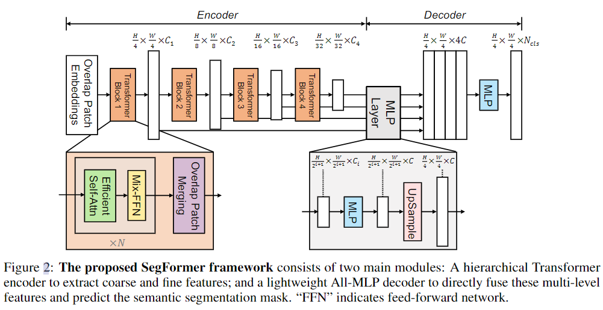
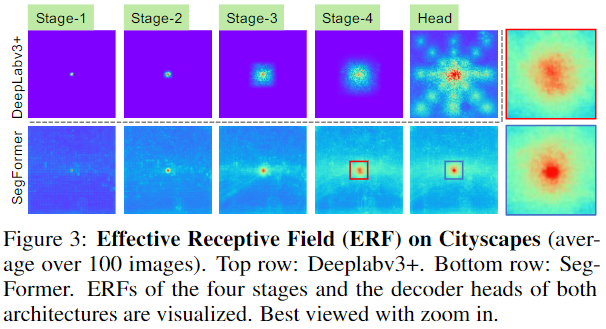
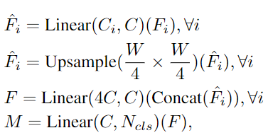
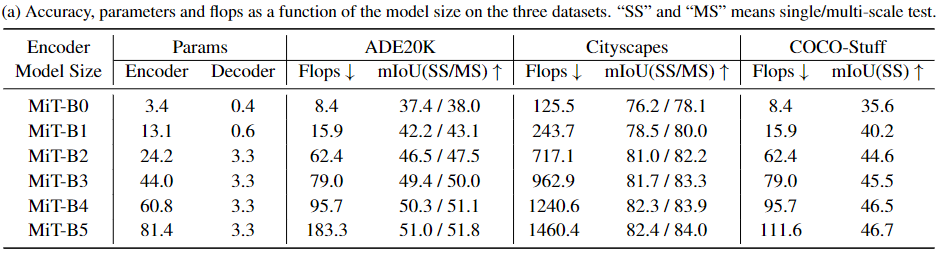
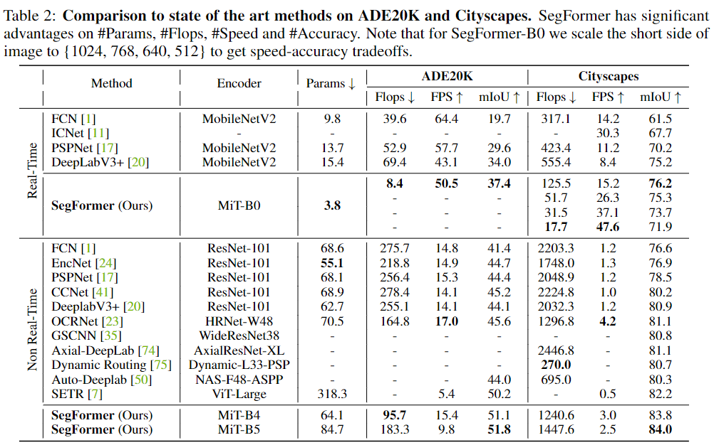

SegFormer论文阅读
标题：《SegFormer: Simple and Efficient Design for Semantic Segmentation with Transformers》
作者：Enze Xie, Wenhai Wang, Zhiding Yu, Anima Anandkumar, Jose M. Alvarez, Ping Luo
录用情况：NeurIPS'2021
开源代码：在MMSegmentation中已有实现
这篇文章提出了一个简单高效的语义分割模型，使用了多尺度的Transformer结构做为Encoder，和使用MLP实现的简单的Decoder；在Transformer-Based中，作者没有使用显式的位置编码，而使用CNN建模位置信息；并且还使用了一些策略将attention计算的复杂度从\(O(N^2)\)降低到\(O(N^2/R)\)；

本文的很多方法都不是原创，但是在作者的组合、改进下，取得了性能与参数量平衡的结果；
模型结构
整体

Overlapped Patch Merging
将SA的输出重新reshape为\(B\times H \times W
\times C\)，之后让patch与patch之间有overlapped的思想在T2T
ViT中就出现了，在实现时可以统一用一个带有stride的卷积操作实现；
Efficient Self-Attention
作者借用了Pyramid Vision Transformer中的策略，将key, value矩阵应用如下的映射，从而将attention计算的复杂度从\(O(N^2)\)降低到\(O(N^2/R)\)； \[ \begin{aligned} \hat{K}&=\text{Reshape}(\frac{N}{R},C\cdot R)(K)\\ K&=\text{Linear}(C\cdot R, C)(\hat{K}) \end{aligned} \] 在实现时，对key，value使用步长为R的RxR卷积，即同时完成了上述两步；
Mix FFN
借鉴Conditional Positional Encodings for Vision Transformers中的经验，作者将原来Transformer中使用MLP的FFN模块改为了使用3x3卷积的模块，不再使用显式得PE：
1 | fc1 = Conv2d( |
All-MLP Decoder
作者称，他敢使用这么简单的一个Decoder的原因是，他分析到之前设计的Encoder已经拥有了足够大的感受野，不再需要设计像ASPP那样heavy的结构，如下图所示：

MLP结构为：

实验结果
作者修改4个Stage中各种参数（见论文附录），得到了6种配置，在3个数据集上的效果如下：

与先前模型的对比：

更多实验见原文；
小结
作者提出了一种简单的语义分割方法，并且得到了一个3.7M的小模型；抛开作者讲的故事，单看整体的模型结构，像是Transformer结构与CNN的穿插使用；另外，作者在消融实验中似乎没有比较使用原始self attention和efficient self attention的性能与成本差距，或者说，在之前的论文中已经做了相似的实验，这需要我继续阅读相关论文；